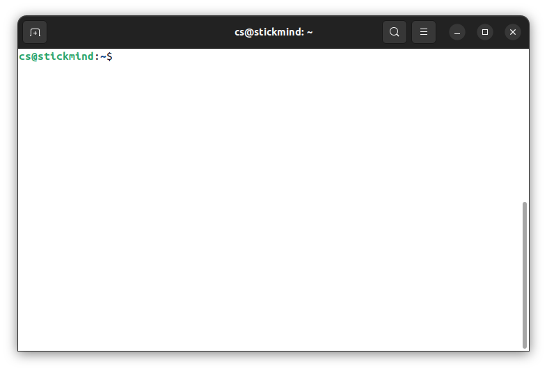
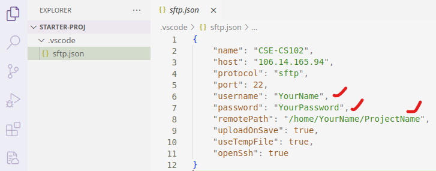

前言
计算机科学教学的前两年，重点是训练你的编程方法和抽象思维能力。在斯坦福大学成功的教学经验中，这两个任务分别由 CS106A 和 CS106B 两门课完成。在 StickMind 课程规划中，这两个任务由 CS101 课程完成，选用 C++ 编程语言。未来也可能会推出现代 C 语言版本的 CS101，敬请期待。
编程方法学的重点是将程序写对，能够利用逐步求精等基本策略，将稍大一些的程序进行分解。这类课程一般会设置一些小游戏或者文本处理，只要求程序能够正确运行即可。抽象思维的重点则是将程序写好，利用一些经典的数据结构和算法，你可以解决一些更为复杂的问题。这类课程不仅要求你把程序写对，更要求你能够高效地解决问题。
经过这些前置课程的训练，你基本能够掌握以下一些能力：
- 了解 Python/C++/Java 基本语法
- 会用递归思维解决问题
- 理解数据抽象并能够实现经典的抽象数据类型（链表、栈、堆、集合、映射）
- 理解并能够实现经典算法（搜索、排序、回溯、哈希）
作为一名程序员，你也应该具备良好的软件工程能力，能够编写组织良好、可读性强的代码。
本课程在计算机科学教学中充当了承上启下的作用。这类课程一般以“计算机组成原理”或“计算机系统基础”冠名。前者偏重硬件，会涉及到 CPU 的内部细节，甚至会要求你设计一个 CPU 模拟器；而后者则偏重软件，以软件开发者的视角抽象看待硬件，不会在硬件层面花费太多精力。本课程倾向于后者，继续提升你的编程技术，在广度和深度上拓展你的编程经验。
本课程将从 C 语言开始，逐步深入到底层汇编语言，一步步带你梳理计算机的运行机制。当完全理解计算机如何执行程序并操作数据时，你将会成为一名更高效的程序员，特别是在处理调试问题、性能优化、内存管理以及程序健壮性方面。只有理解程序是如何运行的，你才能更好地理解 Python/C++/Java 这些高级语言的底层执行逻辑，才能更快地学习其他编程语言进行开发。
本文档是《CS102：计算机组成与系统》课程伴侣，章节规划大致和课程计划同步。大部分内容取材自《深入理解计算机系统》和《C 程序设计语言》两本教材，如有雷同，纯属故意。技术类书籍在没有掌握的情况下阅读，往往效率低下。通过课程、讲义或手册的形式，将一些核心的概念打磨清楚后再去看书，不仅可以节省大量宝贵的时间，还能真正领会字里行间的深意。所以，本书也可以作为上述两本教材的上手指南。
目标
本课程的目标是让学生掌握
- 以复杂的内存和指针方式编写 C 程序
- 对地址空间以及 C 程序的编译/运行时行为，能够建立一个准确的模型
获得以下能力
- 把 C 语言转换到 x86-64 汇编语言
- 编写适配硬件算术局限性的程序
- 识别程序瓶颈并提高运行时性能
- 在 Linux 环境中开发程序
贯穿整个课程，最终会带你揭开计算机基础架构的奥秘。
试听
CS102：计算机组成与系统（试听版）包含前 4 个话题的录播剪辑。试听版仅提供录播内容，不提供任何答疑、作业、批改等服务。试听平台限制课程人数为 500 人，象征性收取 1 元，保留更多名额给有需要的同学。
Linux 介绍
本节参考录播：
开发环境 Linux & C/
- Windows 模拟 Linux 环境-V230911.mp4
- Ubuntu 虚拟机安装及配置-V230912.mp4
本章通过一些基本概念介绍 Linux 的开发环境。首先，我们会讨论 Linux 基金会；然后，介绍一些流行的 Linux 发行版。最终目的是希望大家能够选择一款合适的发行版，作为日常开发的必备工具。
Linux 历史
Linux 是一种开源计算机操作系统，最初是在基于英特尔 x86 的个人计算机上开发的。随后，它被移植到了一系列其他硬件平台上，从小型嵌入式设备到世界上最大的超级计算机。
1991 年，Linus Torvalds 还是芬兰赫尔辛基的一名学生。当时他开始了一个项目：编写自己的操作系统内核。他还收集并开发了以内核为中心的整个操作系统所需的其他基本组件。没过多久，该项目就被命名为 Linux 内核，并最终发展成为对当今世界产生巨大影响的项目。
1992 年，Linux 通过 GNU（自由软件基金会 FSF 的一个项目，推广免费软件）使用 GPL 许可，这使它能够建立一个全球开发者社区。通过将内核与 GNU 项目中的其他系统组件相结合，许多其他开发人员创建了名为 Linux 分发版的完整系统，该系统首次出现在 90 年代中期。
90 年代中期创建的 Linux 发行版完全免费，为计算提供了基础，并成为开源软件运动的推动力。1998 年，IBM 和 Oracle 等大公司宣布支持 Linux 平台，并开始了一系列重大的开发工作。
Linux 基金会
Linux 基金会（LF）是一个非营利性技术联盟，负责托管和促进开源软件项目的协作开发。除了提供一个可以保护和加速 Linux 内核开发的中立组织之外，LF 还致力于围绕开源项目构建一个可持续的生态系统，以加速技术开发和商业应用。
Linux 基金会项目对世界基础设施至关重要，包括 Linux、Kubernetes、Node.js、ONAP、PyTorch、RISC-V、SPDX、OpenChain 等。Linux 基金会专注于利用最佳实践，满足贡献者、用户和解决方案提供商的需求，为开放协作创建可持续的模型。
三大主流 Linux 发行版家族
最具代表性的几个发行版家族有：
- Red Hat 系统家族（包含 CentOS 和 Fedora）
- SUSE 系统家族（包含 openSUSE）
- Debian 系统家族（包含 Ubuntu 和 Linux Mint）

参见：The LWN.net Linux Distribution List
Linux 基金会发布的软件都会保持发行版兼容性，这意味着这些软件几乎可以在所有的现代发行版中无差别运行。不同发行版之间可能仅仅是包管理器、软件版本、文件位置之间有些许差异。掌握任何一个发行版的使用后，都可以很快地迁移到另一个。
Red Hat 系统家族
Red Hat Enterprise Linux（RHEL）家族包括 Fedora，Rocky Linux 和 Oracle Linux 在内的系列产品。
Fedora 与 RHEL 有着密切的关系，并且包含的软件比 Red Hat 的企业版多得多。其中一个原因是，一个多元化的社区参与了 Fedora 的构建，其中许多贡献者并不为 Red Hat 工作。此外，它还被用作未来 RHEL 版本的测试平台。
由于 CentOS 8 在 2021 年之后不再更新，Rocky Linux 挑起了大梁，目的是提供一个由社区驱动的企业版 RHEL。
关于 Red Hat 家族的一些信息：
- Fedora 是 RHEL 的上游测试平台
- Rocky Linux 是 RHEL 的克隆
- 支持多个硬件平台
- 使用基于 RPM 的 dnf 包管理器来安装、更新和删除系统中的包
- RHEL 在企业中有着广泛的使用。
SUSE 系统家族
SUSE Linux Enterprise Server (SLES)/openSUSE 的关系和 RHTL/Fedora 很相似。
关于 SUSE 家族的一些信息：
- SLES 是 openSUSE 的上游
- 使用基于 RPM 的 zypper 包管理器来安装、更新和删除包
- 包括用于系统管理目的的 YaST 应用程序。
- SLES 广泛应用于零售业等其他行业
Debian 系统家族
Debian 发行版是 Ubuntu 和 Linux Mint 等其他几个发行版的上游，通常用于服务器和台式计算机。Debian 是一个纯粹的开源社区项目（不属于任何公司），并且非常注重稳定性。
Debian 为所有 Linux 发行版的用户提供了迄今为止最大、最完整的软件仓库。Ubuntu 旨在提供长期稳定性和易用性之间的良好折衷。由于 Ubuntu 的大部分软件包都来自 Debian 的稳定分支，继承了 Debian 的超大软件仓库。本课程将基于 Ubuntu 22.04 LTS 发行版进行学习。
关于 Debian 家族的一些信息：
- Debian 家族是 Ubuntu 的上游，Ubuntu 是 Linux Mint 和其他版本的上游
- 使用基于 DPKG 的 APT 包管理器来安装、更新和删除包
- Ubuntu 已被广泛用于云部署
- 虽然 Ubuntu 是在 Debian 之上构建的，并且是基于 GNOME 的，但它在视觉上与标准 Debian 以及其他发行版上的界面不同
Windows 模拟 Linux 环境
本节目标
由于大部分同学使用 Windows 系统，在 Windows 平台体验 Linux 开发工具也是可以的。完成本节内容的学习，你应该能够尝试解决以下问题：
- 什么是 MSYS2？如何安装 MSYS2？
- 如何使用
pacman包管理工具更新、安装、删除软件包？ - 如何修改 MSYS2 国内源？
- 如何使用 MSYS2 编译/运行 C 程序？
安装 MSYS2 开发工具
MSYS2 提供了一个易于使用的类 Linux 环境来构建、安装和运行本机 Windows 软件。配合 VS Code 等开发工具，可以搭建一个较为轻量的开发环境。对于一些 POSIX 依赖不太严格的测试，比起使用 Linux 虚拟机更为直接、方便。
安装过程，有以下几点需要注意：
- 国内用户建议断网安装，避免中途出现更新密钥卡死的问题
- 安装完后，国内用户建议修改国内软件源，提高下载速度
- 后续软件体积较大，建议安装在非 C 盘根目录
- 建议使用 MSYS2 UCRT 子系统，和课程保持一致
- 优先安装
mingw-w64-ucrt-x86_64-前缀的软件包
常用命令总结如下，方便后续使用查询，参考连接：Package Management
-
更新 MSYS2 组件，修改源后建议更新两次
pacman -Suy -
安装
openssh可用于后续连接远程服务器pacman -S openssh -
安装
gcc、gdb、pkg-config等常用开发工具pacman -S mingw-w64-ucrt-x86_64-toolchain -
安装
make，cmake，ninja等构建工具pacman -S make mingw-w64-ucrt-x86_64-cmake mingw-w64-ucrt-x86_64-ninja
编译运行 C 程序
在 MSYS2 当前目录创建一个 hello.c 文件，输入以下代码：
#include <stdio.h>
int main(void) {
printf("Hello World.\n");
return 0;
}
使用以下命令编译你的第一个 C 程序：
gcc hello.c -o hello
运行该程序，需要以 ./ 开头执行以下命令：
./hello
前缀 ./ 表示在当前目录下寻找 hello 程序。
Ubuntu 虚拟机安装及配置
本节目标
本节带大家使用 VirtualBox 安装一个 Ubuntu 22.04 LTS 桌面系统，并尝试使用 OpenSSH 模拟远程登陆。完成本节内容的学习，你应该能够尝试解决以下问题：
- 如何通过 VirtualBox 安装 Ubuntu 虚拟机？
- 如何使用
apt包管理器安装、更新、删除软件包？ - 如何修改 Ubuntu 软件源提高下载速度？
- 如何使用 MSYS2 的
ssh工具访问 Ubuntu 虚拟机？
安装 Ubuntu 虚拟机
VirtualBox 是 Oracle 提供的一款流行的虚拟化软件，可用于 Linux、mac 和 Windows 系统。由于 Linux 系统相对灵活，软件包依赖维护较差，在不熟悉的情况下，很容易造成系统破坏，无法开机等问题。所以，初学阶段没必要在物理机上安装真实的 Linux 系统，就目前的学习而言，虚拟机提供的功能完全够用。一旦虚拟机出现问题，可以直接删除，重新安装。
提前下载 VirtualBox 和 Ubuntu 22.04 LTS 镜像：
详细的安装过程，请跟随课堂视频一步步完成安装。
安装开发工具
apt 命令是一个功能强大的命令行工具，它与 Ubuntu 的高级打包工具（APT）配合使用。 apt 中包含的命令提供了安装新软件包、升级现有软件包、更新软件包列表索引、甚至升级整个 Ubuntu 系统的方法。
尝试安装以下软件：
-
build-essential包含了常用的gcc开发工具sudo apt install build-essential -
安装
gdb、valgrind调试器和内存检测工具sudo apt install gdb valgrind -
安装
git，cmake等常用工具sudo apt install git cmake ninja-build
参考文献：
安装 SSH 工具
OpenSSH 是一个功能强大的工具集，用于远程控制联网计算机以及在联网计算机之间传输数据。OpenSSH 客户端和服务器应用程序的安装非常简单。
使用以下命令在 Ubuntu 系统上安装 OpenSSH 客户端应用程序：
sudo apt install openssh-client
使用以下命令在 Ubuntu 系统上安装 OpenSSH 服务器应用程序：
sudo apt install openssh-server
默认情况下，OpenSSH 服务将会自动启动，也可以使用下述命令手动开启服务：
sudo systemctl start sshd.service
参考文献：
模拟远程登陆
这里需要先配置端口转发，详细的配置过程，请跟随课堂视频一步步完成。

完成端口转发配置后，我们可以使用终端模拟远程登陆：
$ ssh cs@localhost -p 2222
The authenticity of host '[localhost]:2222 ([127.0.0.1]:2222)' can't be established.
ED25519 key fingerprint is SHA256:gfHLfANKNM4cCAoDEZ/CiZ97ql3lfUA2CVM28H6JssM.
This key is not known by any other names.
Are you sure you want to continue connecting (yes/no/[fingerprint])? yes
Warning: Permanently added '[localhost]:2222' (ED25519) to the list of known hosts.
cs@localhost's password:
Welcome to Ubuntu 22.04.3 LTS (GNU/Linux 6.2.0-26-generic x86_64)
* Documentation: https://help.ubuntu.com
* Management: https://landscape.canonical.com
* Support: https://ubuntu.com/advantage
Last login: Tue Aug 15 13:56:00 2023 from 10.0.2.2
VS Code 官方远程插件工作流
前往官网下载安装 VS Code，在插件市场搜索并安装 Remote - SSH 插件。

插件安装完成后，在工具栏选择 Remote Explorer 模块，点击 SSH 后面的 + 号。在弹出的输入窗口中，输入 SSH 登陆地址。
ssh cs@localhost -p 2222
随后会提示选择配置文件保存位置，此处直接“回车”选择默认位置即可。

此时点击 Remote 右侧的刷新按钮，就可以看到服务器 IP。连接该服务器，只需要点击 IP 右侧的箭头，随后输入你的账户密码就可以登录。登录成功后，可以在 VS Code 右下角看到连接状态。

服务器连接成功后，通过 VS Code 菜单栏 File 可以选择 “Open File/Open Folder” 编辑你的文件或项目。
Linux 命令行
Linux 发行版通常提供多种不同的图形桌面环境，极大地方便了不同用户的使用习惯，但是 Linux 系统真正强大的却是命令行。本课程建议大家选择一款流行的桌面环境，将更多的精力放在命令行的学习上，而不是放在五花八门的桌面环境定制上。
从今天开始，通过命令行工具和你的 Linux 系统进行交互，并一直走下去。真正的 Linux 系统管理员也是花费了大量的时间在命令行的工具上，通过文本界面自动化一些任务，解决一些问题。有句话是这么说的，“图形用户界面让简单的事情变得更简单，而命令行界面让困难的任务变得可能”。Linux 系统严重依赖大量的命令行工具，这些工具有以下一些优点：
- 没有 GUI 开销，对硬件要求更友好
- 几乎所有的任务都能够通过命令行完成
- 可以为一些常见的任务定制命令脚本自动完成
- 可以在任何地方通过网络连接远程 Linux 服务器
- 图形界面在不同的发行版中会有差异，但命令行的使用却是通用的
使用文本终端
终端模拟器程序在桌面窗口中模拟独立终端，本质上就像你在没有运行图形界面的纯文本终端上登录机器一样。大多数终端模拟器程序支持打开多个终端会话。Ubuntu 默认使用 gnome-terminal 终端应用程序。

sudo
sudo 为用户提供管理（admin）权限，允许用户使用 root 用户的安全权限来运行程序。全新安装的 Ubuntu 系统默认 root 密码是随机的，每次开机都会有一个新的密码。
如果想把该密码固定，可以打开终端，输入以下命令。重复输入两次密码进行设置（输入过程中，字符不会显示）。
sudo passwd
此时我们可以通过以下命令切换到 root 用户。注意，在 root 用户下所有操作都是允许的，切记不要误改文件，否则无法恢复。
su root
cs@stickmind:~$ su root
Password:
root@stickmind:/home/cs#
基本命令
本节讨论如何通过命令行完成一些基本操作。
登陆/退出系统
回顾虚拟机的使用教程，通过命令行，可以使用以下命令登陆系统。SSH 通过服务器地址 172.0.0.1 和端口 2222 访问系统中的 cs 账户：
ssh cs@172.0.0.1 -p 2222
退出系统可以使用：
exit
重启/关机
使用 shutdown 命令可以关闭 Linux 系统。以下命令表示立刻关闭计算机（不加参数 now，则系统将会在 1 分钟后关机）：
sudo shutdown now
重启计算机可以使用 reboot 命令。以下命令表示立刻重启计算机：
sudo reboot
reboot 命令等价于 sudo shutdown -r now。其中，参数 now 可以替换成具体时间，比如 sudo shutdown -r +30 表示 30 分钟后重启。
访问路径
登陆系统后，默认的位置是个人账户目录，也可以通过系统变量 $HOME 查看：
echo $HOME
在 Linux 系统中，该路径也可以使用 ~ 表示，例如 ~/Desktop 表示 /home/cs/Desktop。
| 命令 | 用途 |
|---|---|
pwd | 显示当前路径 |
cd ~ 或 cd | 切换到个人账户目录 |
cd .. | 切换到上级目录 (..) |
cd - | 切换到前一步目录 - (减号) |
定位程序位置
当我们执行命令时，系统会根据配置好的路径依次在目录中寻找该命令；如果找不到，则会提示 “not found”。可以通过系统变量 PATH 查看修改查找的路径和顺序。
echo $PATH
根据输出可以看出，路径之间用冒号分隔，查询顺序从左到右依次进行。
$ echo $PATH
/usr/local/sbin:/usr/local/bin:/usr/sbin:/usr/bin:/sbin:/bin:/usr/games:/usr/local/games:/snap/bin
在执行 hello 程序时，如果不添加 ./ 前缀，则系统会提示找不到 hello 命令，其原因就是 PATH 并不包含当前目录。如果我们将 hello 程序放到 ~/.local/bin 目录下，则可以通过以下命令，将该路径添加到 PATH 变量中。
export PATH=$HOME/.local/bin:$PATH
使用 which 命令可以定位程序的位置，该命令会在系统路径中查找程序的位置并输出，例如
$ which make
/usr/bin/make
如果不局限系统路径，可以使用 whereis 命令扩大搜索范围。
$ whereis diff
diff: /usr/bin/diff /usr/share/man/man1/diff.1.gz
绝对路径 vs 相对路径
在 Linux 中定义路径的两种方式：
-
绝对路径
绝对路径以根路径
/开头，依次跟随目录树分支，定位到需要的位置，例如，/usr/bin。 -
相对路径
相对路径以当前路径开头，
.表示当前目录，..表示上一级目录，~表示个人账户目录。
在个人账户目录中，执行以下命令都会切换到 /usr/bin 目录，
$ pwd
/home/cs
$ cd /usr/bin
$ pwd
/home/cs
$ cd ../../usr/bin
查看文件系统
使用第三方工具 tree 可以很方便地浏览文件系统内容，通过以下命令进行安装：
sudo apt install tree
直接使用 tree 命令会递归列出当前路径下所有文件树，通过 -L 指定层级可以指定显示的文件深度：
$ tree -L 1
.
├── Desktop
├── Documents
├── Downloads
├── Music
├── Pictures
├── Public
├── snap
├── Templates
└── Videos
其他一些常用命令也可以实现类似目的：
| 命令 | 用途 |
|---|---|
ls | 列出当前目录内容 |
ls –a | 列出当前目录内容，包含 . 开头的隐藏文件 |
ls -l | 以列表形式列出当前目录内容 |
练习
- 使用
whereis命令定位gcc程序的位置 - 显示当前路径
- 切换到
/usr/bin目录 - 切换到个人账户目录
- 切换到上一级目录
- 使用
-参数切换到前一步目录 - 显示当前路径
文件操作
Linux 提供了许多命令用于查看文件的内容、创建新文件或空文件、更改文件的时间戳以及移动、删除和重命名文件或目录。这些命令可以用于管理数据和文件，并确保在正确的位置提供正确的数据。在本节中，我们将学习如何管理文件。
查看文件
| 命令 | 用途 |
|---|---|
cat | 用于查看不太长的文件，不提供页面操作 |
tac | 逆序打印文件内容 |
less | 用于查看较大的文件，提供页面操作，操作逻辑类似 vi 编辑器 |
tail | 默认打印文件后 10 行内容，通过参数 -n 15 或 -15 可以改变显示的行数 |
head | 和 tail 命令相反，默认打印文件前 10 行内容 |
补充：vi 编辑器使用 j 向下滚动，k 向上滚动，使用 / 向后查找，使用 ? 向前查找。
文件的创建
touch 命令常用于更新文件的状态，默认修改文件时间戳为当前时间。不过，我们也可以使用该命令创建一个空白文件：
touch myfile
更多功能可以查询帮助，比如使用 -t 可以设定具体的时间戳。以下命令将文件时间设置为 8 月 12 日 14 点整：
touch -t 08121400 myfile

文件移动、重命名等
mv 命令可以实现两个功能：
- 重命名文件或文件夹
- 移动文件到另一个目录
如果不确定删除哪些文件，可以是用 -i 交互操作。
| 命令 | 用途 |
|---|---|
mv | 重命名文件 |
rm | 删除文件 |
rm –f | 强制删除文件 |
rm –i | 交互删除文件 |
文件夹创建和删除
mkdir 命令用于创建目录文件夹，例如，在当前目录创建文件夹可以使用
mkdir myfolder
在指定目录创建文件夹可以使用
mkdir ~/Desktop/myfolder
删除文件夹可以使用 rmdir 命令，默认只能删除空文件夹。使用命令 rm -rf 可以快速简单地递归删除整个文件夹。
| 命令 | 用途 |
|---|---|
mv | 重命名文件夹 |
rmdir | 删除空白文件夹 |
rm -rf | 强制删除文件夹 |
修改命令行提示符
命令行工具通过变量 PS1 存储命令行的文本字符串，一般 Linux 发行版会默认设置一个值，例如：
cs@stickmind:~$
通过修改该变量，可以定制显示的内容：
PS1="cs102@virtualbox: "
命令提示符将修改为：
cs102@virtualbox:
注意，在终端直接赋值变量名，仅在当前激活的终端有效。重新打开终端，变量内容仍然是默认值。如果我们想永久修改该变量，可以尝试在 .bashrc 中进行设置。
练习
- 使用
touch创建两个文件file1和file2 - 使用
ls -l检查文件状态 - 将
file1重命名为new_file1 - 将
file2移动到上级目录 - 删除
file2和new_file1 - 创建文件夹
dir1 - 删除
dir1
文件搜索
熟练使用查找命令可以节省很多时间并提高工作效率，涉及搜索的主要工具是 find 等实用程序。
标准文件流
在执行命令时，默认情况下有三个标准文件流始终打开以供使用：标准输入 stdin、标准输出 stdout 和标准错误 stderr。
| 名称 | 符号名 | 值 | 示例 |
|---|---|---|---|
| 标准输入 | stdin | 0 | 键盘 |
| 标准输出 | stdout | 1 | 终端 |
| 标准错误 | stderr | 2 | 日志 |
stdin 通常是键盘，stdout 和 stderr 通常打印在终端上。利用重定向，也可以将某个文件作为输入 stdin，并将输出 stdout 定向到另一个文件，stderr 通常定向到错误日志文件。
在 Linux 中，所有打开的文件都由所谓的文件描述符（file descriptor）在内部表示的并从零开始，stdin 是 0，stdout 是 1，stderr 是 2。如果还打开了其他文件，则文件描述符继续从 3 开始，并依次增加。
重定向
通过 Shell，我们可以重定向三个标准文件流，这样我们就可以从一个文件或另一个命令中获得输入，而不是从键盘获得输入。我们可以将输出和错误写入文件，或者用于为后续命令提供输入。
例如，可以使用 > 符号将 hello 输出定向到某个文件：
./hello > anyfile
使用 < 符号将某个文件作为输入：
cat < hello.c
输入输出还可以组合使用：
./add < infile > outfile
对于 stderr 需要明确指定文件描述符的值：
./add 2> errfile
如果打算将 stderr 输出到 stdout，则可以使用：
./add > outfile 2>&1
管道
UNIX/Linux 的理念是设计许多简单而简短的程序或命令，协同工作来解决复杂的任务，而不是设计一个复杂的程序，通过不同的选项和模式来完成。为了实现这一点，UNIX/Linux 大量使用管道来实现这一目的，通过管道可以将一个命令或程序的输出作为另一个命令或程序的输入。
可以通过管道符号 | 来实现管道操作：
$ cmd1 | cmd2 | cmd3
以上命令非常有效，因为 cmd2 和 cmd3 不必等待先前的管道命令完成，就可以开始处理其输入流中的数据；特别是在多核心系统上，可用的计算能力得到了更好的利用。
另一点是，管道之间的输入输出无需存储到硬盘上，硬盘的读写同样效率低下。
查找
find 是 Linux 系统管理员日常生活中非常有用且经常使用的实用程序。它可以从任意特定目录（或目录集）向下递归文件系统，并定位符合指定条件的文件，默认路径名始终为当前工作目录。
例如，管理员有时会花几周的时间扫描的一个潜在的核心文件，以便将其删除。有时候也用于清理临时目录 /tmp 或缓存目录 /var/cache/ 中的非必要文件。许多发行版也内置一些脚本程序，定期清理这些目录。

不指定参数的情况下，find 会递归列出当前目录下所有的文件。常用的选项有：
-
-name列出包含某个字符串的文件find /usr -name gcc -
-iname列出不包含某个字符串的文件find /usr -iname gcc -
-type限定文件的类型，例如d表示目录，l表示符号链接，f表示普通文件find /usr -type d -name gccfind /usr -type f -name gcc
find 的另一个用途是能够在符合搜索条件的文件上运行命令，需要使用选型 -exec。例如，查找并删除 .swp 后缀的文件：
find -name "*.swp" -exec rm {} ';'
其中 {} 充当占位符，用于替换搜索到的文件名。需要注意的是，命令必须以 ';' 或 \; 结尾。
练习
以 / 开头，搜索包含 init.d 的文件。
从 C++ 到 C
本节我们会使用 C 语言复习 CS101 中的一些概念，并改写一些 C++ 程序，逐步上手 C 语言的开发。
相信大家还记得 CS101 库中的两个重要的接口工具 strlib.h 和 filelib.h。这些抽象接口极大地方便了我们编写字符串处理和文件 I/O 相关的程序。所以在本课程的教学方式上，我们依然遵循抽象思维的观念，避免较早地涉及底层的细节。在入门示例中，重点抽象了以下两个类型 string 和 stream，以便在不涉及指针的情况下，就能完成字符串和文件的处理工作。
希望通过这样的方式，方便大家对比学习，能够将现有的知识迁移到新的语境中。
/*
* Type: string
* ------------
* The type string is identical to the type char *, which is
* traditionally used in C programs. The main point of defining a
* new type is to improve program readability. At the abstraction
* levels at which the type string is used, it is usually not
* important to take the string apart into its component characters.
* Declaring it as a string emphasizes this atomicity.
*/
typedef char* string;
/*
* Type: stream
* ------------
* Like string, the stream type is used to provide additional
* readability and is defined to be equivalent to FILE *
* (which is particularly confusing because it violates
* standard case conventions).
*/
typedef FILE* stream;
为了照顾部分编程基础较为薄弱的同学，本次课程也会引入 CMake 并介绍一种较为方便的 VS Code 开发工作流，方便大家课后自行练习、巩固。
练习
下载群文件中的 230915-cslib/cslib.zip 文件，尝试使用 CMake 工具，将 .h 和 .c 组成的文件集合打包成静态库。
simpio.h
该接口导出几个函数来简化输入数据的读取。
接口
| 函数 | 功能 |
|---|---|
GetInteger() | 从标准输入读取一行文本并将其作为 int 整数返回 |
GetLong() | 从标准输入读取一行文本并将其作为 long 整数返回 |
GetReal() | 从标准输入读取一行文本并将其作为 double 浮点数返回 |
GetLine() | 从标准输入读取一行文本并将其作为字符串返回 |
ReadLine(infile) | 从输入文件中读取一行文本并将该行作为字符串返回 |
接口详情
/*
* Function: GetInteger
* Usage: i = GetInteger();
* ------------------------
* GetInteger reads a line of text from standard input and scans
* it as an integer. The integer value is returned. If an
* integer cannot be scanned or if more characters follow the
* number, the user is given a chance to retry.
*/
int GetInteger(void);
/*
* Function: GetLong
* Usage: l = GetLong();
* ---------------------
* GetLong reads a line of text from standard input and scans
* it as a long integer. The value is returned as a long.
* If an integer cannot be scanned or if more characters follow
* the number, the user is given a chance to retry.
*/
long GetLong(void);
/*
* Function: GetReal
* Usage: x = GetReal();
* ---------------------
* GetReal reads a line of text from standard input and scans
* it as a double. If the number cannot be scanned or if extra
* characters follow after the number ends, the user is given
* a chance to reenter the value.
*/
double GetReal(void);
/*
* Function: GetLine
* Usage: s = GetLine();
* ---------------------
* GetLine reads a line of text from standard input and returns
* the line as a string. The newline character that terminates
* the input is not stored as part of the string.
*/
string GetLine(void);
/*
* Function: ReadLine
* Usage: s = ReadLine(infile);
* ----------------------------
* ReadLine reads a line of text from the input file and
* returns the line as a string. The newline character
* that terminates the input is not stored as part of the
* string. The ReadLine function returns NULL if infile
* is at the end-of-file position.
*/
string ReadLine(stream infile);
simpio.h
该接口定义了动态分配字符串的通用库。传统 C 字符串与使用此接口定义的字符串之间的主要区别是：
strlib.h接口负责内存分配，确保有足够的空间来保存每个字符串操作的结果。strlib.h接口的客户端应将所有字符串视为不可变，并避免写入字符数组。
接口
| 函数 | 功能 |
|---|---|
ConcatString(s1, s2) | 通过将两个字符串首尾相连进行连接 |
IthChar(s, i) | 返回字符串 s 中位置 i 的字符 |
SubString(s, p1, p2) | 返回 s 索引区间为 [p1, p2] 的子字符串 |
CharToString(ch) | 接受单个字符并返回由该字符组成的单字符字符串 |
StringLength(s) | 返回字符串 s 的长度 |
CopyString(s) | 将字符串 s 复制到动态内存中并返回新字符串 |
StringEqual(s1, s2) | 如果字符串 s1 和 s2 相等，则返回 true |
StringCompare(s1, s2) | 如果字符串 s1 按字典顺序位于 s2 之前，则返回 -1；如果相等，则返回 0；如果 s1 位于 s2 之后，则返回 +1 |
FindChar(ch, text, start) | 从位置 start 开始，在字符串 text 中搜索的字符 ch，并返回该字符出现的第一个索引；如果未找到匹配项，则返回 -1 |
FindString(str, text, start) | 从位置 start 开始，在字符串 text 中搜索字符串 str，并返回该字符串出现的第一个索引；如果未找到匹配项，则返回 -1 |
ConvertToLowerCase(s) | 返回一个新字符串，其中所有字母字符都转换为小写 |
ConvertToUpperCase(s) | 返回一个新字符串，其中所有字母字符都转换为大写 |
IntegerToString(n) | 将整数转换为相应的数字字符串 |
StringToInteger(s) | 将数字字符串转换为整数 |
RealToString(d) | 将浮点数转换为相应的数字字符串 |
StringToReal(s) | 将数字字符串转换为浮点数 |
接口详情
/* Section 1 -- Basic string operations */
/*
* Function: ConcatString
* Usage: s = ConcatString(s1, s2);
* --------------------------
* This function concatenates two strings by joining them end
* to end. For example, ConcatString("ABC", "DE") returns the string
* "ABCDE".
*/
string ConcatString(string s1, string s2);
/*
* Function: IthChar
* Usage: ch = IthChar(s, i);
* --------------------------
* This function returns the character at position i in the
* string s. It is included in the library to make the type
* string a true abstract type in the sense that all of the
* necessary operations can be invoked using functions. Calling
* IthChar(s, i) is like selecting s[i], except that IthChar
* checks to see if i is within the range of legal index
* positions, which extend from 0 to StringLength(s).
* IthChar(s, StringLength(s)) returns the null character
* at the end of the string.
*/
char IthChar(string s, int i);
/*
* Function: SubString
* Usage: t = SubString(s, p1, p2);
* --------------------------------
* SubString returns a copy of the substring of s consisting
* of the characters between index positions p1 and p2,
* inclusive. The following special cases apply:
*
* 1. If p1 is less than 0, it is assumed to be 0.
* 2. If p2 is greater than the index of the last string
* position, which is StringLength(s) - 1, then p2 is
* set equal to StringLength(s) - 1.
* 3. If p2 < p1, SubString returns the empty string.
*/
string SubString(string s, int p1, int p2);
/*
* Function: CharToString
* Usage: s = CharToString(ch);
* ----------------------------
* This function takes a single character and returns a
* one-character string consisting of that character. The
* CharToString function is useful, for example, if you
* need to concatenate a string and a character. Since
* ConcatString requires two strings, you must first convert
* the character into a string.
*/
string CharToString(char ch);
/*
* Function: StringLength
* Usage: len = StringLength(s);
* -----------------------------
* This function returns the length of s.
*/
int StringLength(string s);
/*
* Function: CopyString
* Usage: newstr = CopyString(s);
* ------------------------------
* CopyString copies the string s into dynamically allocated
* storage and returns the new string. This function is not
* ordinarily required if this package is used on its own,
* but is often necessary when you are working with more than
* one string package.
*/
string CopyString(string s);
/* Section 2 -- String comparison functions */
/*
* Function: StringEqual
* Usage: if (StringEqual(s1, s2)) ...
* -----------------------------------
* This function returns true if the strings s1 and s2 are
* equal. For the strings to be considered equal, every
* character in one string must precisely match the
* corresponding character in the other. Uppercase and
* lowercase characters are considered to be different.
*/
bool StringEqual(string s1, string s2);
/*
* Function: StringCompare
* Usage: if (StringCompare(s1, s2) < 0) ...
* -----------------------------------------
* This function returns a number less than 0 if string s1
* comes before s2 in alphabetical order, 0 if they are equal,
* and a number greater than 0 if s1 comes after s2. The
* ordering is determined by the internal representation used
* for characters, which is usually ASCII.
*/
int StringCompare(string s1, string s2);
/* Section 3 -- Search functions */
/*
* Function: FindChar
* Usage: p = FindChar(ch, text, start);
* -------------------------------------
* Beginning at position start in the string text, this
* function searches for the character ch and returns the
* first index at which it appears or -1 if no match is
* found.
*/
int FindChar(char ch, string text, int start);
/*
* Function: FindString
* Usage: p = FindString(str, text, start);
* ----------------------------------------
* Beginning at position start in the string text, this
* function searches for the string str and returns the
* first index at which it appears or -1 if no match is
* found.
*/
int FindString(string str, string text, int start);
/* Section 4 -- Case-conversion functions */
/*
* Function: ConvertToLowerCase
* Usage: s = ConvertToLowerCase(s);
* ---------------------------------
* This function returns a new string with all
* alphabetic characters converted to lower case.
*/
string ConvertToLowerCase(string s);
/*
* Function: ConvertToUpperCase
* Usage: s = ConvertToUpperCase(s);
* ---------------------------------
* This function returns a new string with all
* alphabetic characters converted to upper case.
*/
string ConvertToUpperCase(string s);
/* Section 5 -- Functions for converting numbers to strings */
/*
* Function: IntegerToString
* Usage: s = IntegerToString(n);
* ------------------------------
* This function converts an integer into the corresponding
* string of digits. For example, IntegerToString(123)
* returns "123" as a string.
*/
string IntegerToString(int n);
/*
* Function: StringToInteger
* Usage: n = StringToInteger(s);
* ------------------------------
* This function converts a string of digits into an integer.
* If the string is not a legal integer or contains extraneous
* characters, StringToInteger signals an error condition.
*/
int StringToInteger(string s);
/*
* Function: RealToString
* Usage: s = RealToString(d);
* ---------------------------
* This function converts a floating-point number into the
* corresponding string form. For example, calling
* RealToString(23.45) returns "23.45". The conversion is
* the same as that used for "%G" format in printf.
*/
string RealToString(double d);
/*
* Function: StringToReal
* Usage: d = StringToReal(s);
* ---------------------------
* This function converts a string representing a real number
* into its corresponding value. If the string is not a
* legal floating-point number or if it contains extraneous
* characters, StringToReal signals an error condition.
*/
double StringToReal(string s);
Pig Latin
本节通过一个简化的 C 程序复习模块化开发和逐步求精的过程。模块化开发就是把一个程序分成多个模块的技术，回忆下 CS101 作业 1 中 soundex 的处理过程，模块通过一系列函数实现功能拆分。
通过该案例，我们也可以了解从 C++ 转到 C 的一些变化，例如，如何维护状态信息？如何保持状态的私有性？
任务说明
Pig Latin 是按照如下简单的规则转换每个英文单词，从而创造一门新的语言：
- 如果单词以辅音开头，则将第一个元音字母前的所有辅音字符串移到末尾，并加上
ay - 如果单词以元音开头，则加上
way
例如，单词 scram 符合第一条规则，所以将 scr 移动到尾部并加上 ay，结果就是 amscray。单词 apple 符合第二条规则，所以直接加上 way，结果就是 appleway。
任务 1：实现交互程序
程序执行时会提示用户输入一段文字，然后程序能够生产如下的结果：
Enter a line: this is pig latin.
isthay isway igpay atinlay.
我们采用自顶向下实现，可以不用一开始就决定如何将程序分割成多个模块。在实现交互程序时，可以先假设有一个接口，能够将一行字符串转换成 Pig Latin：
/*
* Function: TranslateLine
* Usage: TranslateLine(line);
* ---------------------------
* This function takes a line of text and translates
* the words in the line to Pig Latin, displaying the
* translation as it goes.
*/
void TranslateLine(string line);
以抽象思维开发程序，我们已经能够实现程序的交互部分了。
💡Hint
int main(int argc, string args[]) {
printf("Enter a line: ");
string line = GetLine();
TranslateLine(line);
}
任务 2：实现 TranslateLine
实现 TranslateLine 将转变抽象层级，此时我们作为开发者将提供上述接口。在这个层级上，问题依然复杂，需要进一步将问题拆解。
TranslateLine 需要做的工作大致可以分为 3 步：
- 如何将一个字符串拆分成独立的单词
- 按规则将每个单词转换成 Pig Latin
- 显示转换后的单词，并以换行符结尾
💡Hint
如果以容器的思想，如何拆分上述步骤？
C 虽然没有提供直接使用的容器，但使用动态数组，我们也能够完成同样的任务。这里为了简便起见，我们不需要存储每个单词，一旦翻译完成就立刻显示结果，并处理下一个单词。
回顾 CS101 中作业 2 的 search 程序，对单词的处理一般是通过 token 来完成的。比如，这样的输入行：
this is pig latin.
可以看作是以下 8 个 token 组成：

可以看出，除了单词，token 还包括一些标点组成的字符。在处理 token 是需要进行判断，这里我们假设有一个谓词函数接口 IsLegalWord 可以直接使用。
同样为了简便起见，我们提供了一份 C 版本的 tokenscanner 接口库。
| 函数 | 功能 |
|---|---|
InitScanner(line) | 初始化扫描器，以便从开头读取每个 token |
GetNextToken() | 返回下一个 token |
AtEndOfLine() | 如果扫描器到达末尾，返回 true |
常用的编程习语可以参考如下的循环结构。其中，InitScanner 初始化后，GetNextToken 将能够获取第一个单词。如果 AtEndOfLine，扫描器将会重复相同的处理逻辑。
InitScanner(line);
while (!AtEndOfLine()) {
token = GetNextToken();
... 处理 token 记号 ...
}
在 tokenscanner 的帮助下，我们进一步拆分了 TranslateLine 处理逻辑，将翻译的工作交给 TranslateWord 处理。
💡Hint
void TranslateLine(string line) {
InitScanner(line);
while (!AtEndOfLine()) {
string token = GetNextToken();
if (IsLegalWord(token))
token = TranslateWord(token);
printf("%s", token);
}
printf("\n");
}
任务 3：实现 IsLegalWord 和 TranslateWord
完成 TranslateLine 的拆解后，我们的工作只剩下 token 处理的几个函数。
IsLegalWord 相对比较容易，我们只需要借助 ctype.h 接口提供的 isalpha 函数就能够判断 token 是否为有效单词。
💡Hint
bool IsLegalWord(string token) {
for (int i = 0; i < StringLength(token); i++) {
if (!isalpha(IthChar(token, i)))
return (false);
}
return (true);
}
TranslateWord 稍微复杂一些，根据规则你需要判断第一个元音字母的位置：如果位置为 0，则按照规则 1 处理；如果不为 0，则按照规则 2 处理。
那么如何判断元音字母呢？检查 strlib.h 接口，我们并没有发现现成的函数可以使用。此时，扩充该接口就很有必要了，因为判断元音的操作相当常见。
剩下的实现相对比较容易，合理使用 strlib.h 接口，我们可以完成这个任务。
💡Hint
string TranslateWord(string word) {
int vp = FindFirstVowel(word);
if (vp == -1) {
return (word);
} else if (vp == 0) {
return (ConcatString(word, "way"));
} else {
string head = SubString(word, 0, vp - 1);
string tail = SubString(word, vp, StringLength(word) - 1);
return (ConcatString(tail, ConcatString(head, "ay")));
}
}
int FindFirstVowel(string word) {
for (int i = 0; i < StringLength(word); i++) {
if (IsVowel(IthChar(word, i)))
return (i);
}
return (-1);
}
思考
- 为什么
GetNextToken不需要提供line参数？ - 循环结构中，
GetNextToken每次调用，都会从line的不同位置开始，这是如何做到的？ - 如何避免外部程序调用我们拆分的这些辅助函数？
推荐阅读
更多 C 和 C++ 的不同之处，可以参考 http://www.cs.ecu.edu/karl/4627/spr18/C.html
实验 0：上手 Linux 开发环境
本课程开发环境选用远程 Linux 云端服务器和命令行工具，搭配本地终端和 VS Code 即可完成所有练习。
本次实验将带大家练习远程开发的流程，实验结束后，你应该能够连接上课程的远程服务器，并能够使用终端命令，搭配 VS Code 进行代码编辑。
❓FAQ 为什么使用远程服务器进行开发？
如果回到上个世纪 80 年代，即使电脑就在你的面前，你也必须使用终端才能对计算机进行操作。现如今，随着个人计算机的发展，虽然图形界面早已成熟，但在真实的开发场景中，使用终端开发仍然占据主导地位。大量的前后端框架、开源项目、开发工具，也严重依赖终端操作。
本课程尽量还原类似的真实开发场景。当你以后有机会去软件公司实习时，你会发现，在这里掌握的技能，将会给你带来极大的回报。
登录课程云服务器
服务器 IP 地址为 106.14.165.94，在任何支持 ssh 命令的计算机终端1上输入如下命令。
- Window 11 已搭载 Windows Terminal
- Linux/macOS 内置 Terminal
ssh YourName@106.14.165.94
第一次使用会弹出确认信息，输入 yes 后紧接着输入服务器用户密码（输入过程中，密码不会显示），成功后的输出信息如下。
The authenticity of host '106.14.165.94 (106.14.165.94)' can't be established.
ED25519 key fingerprint is SHA256:LHvn4qDvTdM1+GcJtG2f+uywxDA2JSys.
This key is not known by any other names
Are you sure you want to continue connecting (yes/no/[fingerprint])? yes
Warning: Permanently added '106.14.165.94' (ED25519) to the list of known hosts.
YourName@106.14.165.94's password:
Welcome to Ubuntu 22.04.1 LTS (GNU/Linux 5.15.0-52-generic x86_64)
查看服务器信息常用命令
- 查看主机名：
hostname - 查看用户名：
whoami - 查看硬盘空间：
df -h（仅root权限） - 查看内存状态：
free -h - 查看当前文件夹空间：
du --max-depth=1 -h - 修改登录密码：
passwd
基于 SFTP 远程开发工作流
使用命令行成功登录服务器后，说明你的计算机已经包含了 SSH 等工具。为了便于开发，可以使用流行的 VS Code 文本编辑器辅助编辑、同步项目代码。
❓FAQ 为什么本课程不推荐使用 VS Code 官方 Remote 插件？
如果使用官方 Remote 插件，一旦连接服务器，VS Code 会在
home目录不断生成.vscode-server垃圾文件，严重的时候甚至达到几个 GB 的空间。除此之外，官方 Remote 插件内存占用也比较高，每个用户都会消耗几百 MB 的内存资源。
如此高的资源消耗，即便国内外各大高校自建的校内服务器，也无法承受。
参考：Copies of vscode-server installed on school servers take up excessive storage and RAM
安装 SFTP 插件
在 VS Code 插件市场搜索 SFTP，选择安装 Natizyskunk 开发的 SFTP 插件，如图所示。

配置
安装完插件之后，可以使用本课程提供的初始项目 starter-proj.zip，该项目已设置好 VS Code 和 SFTP 配置框架。解压后使用 VS Code 打开 starter-proj 文件夹。在 .vscode 文件夹下，编辑 sftp.json 文件修改以下几个信息：
username：服务器用户名password：服务器密码remotePath：服务器上需要编辑的项目路径，例如/home/xuehao/cs102/lab0/

使用
⚠️注意
参照上一步配置的
remotePath，必须先在服务器上提前创建好这些目录，才能进行接下来的操作。
配置好后，点击 VS Code 菜单栏 Help 选择 Show All Commands，或直接按 F1 快捷键，在弹出的命令列表中搜索 SFTP。选择 "SFTP: Download Project"，随后选择默认保存位置，远程服务器中的项目将会自动下载到本地的初始项目文件夹中。

在本地编辑完文件并保存后，SFTP 插件会自动将更新后的文件同步到远程服务器。编译、测试、调试等任务，可以通过终端 Terminal 在远程服务器上进行。
⚠️注意
添加文件：如果之前没有创建任何项目文件，那么当你在本地或服务器中创建文件时，并不会自动同步。此时可以使用 "SFTP: Sync Remote -> Local" 或 "SFTP: Sync Local -> Remote" 手动同步。
删除文件：删除文件比较特殊，以上三条命令，对删除文件不起作用。如果有文件需要删除，必须在本地和服务器中分别手动删除。
⚠️注意
如果不小心使用 VS Code 官方远程插件，可以使用
ls -a命令查看你的服务器目录，此时你会发现一个.vscode-server文件夹。可以使用使用
rm -r .vscode-server命令删除该目录。
⚠️注意
严禁使用 Jetbrains Clion/Fleet 连接服务器！一旦连接，此类开发工具会在服务器上下载超过 2 GB 的 Java 依赖。
终端是一台电子计算机或者计算机系统，用来让用户输入数据，及显示其计算结果的机器。
上手 Linux 和 C
Linux 的使用和命令行操作需要不断地练习。熟练使用这些工具，才能更好地完成作业练习。但要注意的是，这些内容不需要刻意去记忆，经过一段时间的重复使用，自然可以掌握。
在开始作业之前，确保你已经能够：
- 登陆课程服务器
- 管理文件，浏览服务器文件系统
- 能够找到实验、作业的初始项目
- 能够合理地管理课程代码，避免杂乱无章
- 通过 VS Code 等编辑器修改服务器上的文件
- 逐步适应 Shell 和命令行的工作流
- 遇到不熟悉的命令，知道去哪里学习
- 会用
tab、上下键等快捷操作避免输入太多命令
本次作业目的是检验大家是否熟练使用 Linux 开发环境，能够适应编辑、构建、运行、测试 C 程序的工作流。
初始项目
建议在个人目录创建一个 cs102 的文件夹，用于管理课程所有的代码。然后可以使用下面的命令，将作业的初始文件复制到该目录。
cp -r /home/cs102-shared/assignments/assign0 ~/cs102
别忘了通过 VS Code 将文件同步到本地查看、编辑。
入侵者检测
在该任务中，你将调查一起模拟的入侵攻击并回答
readme.txt中的几个小问题。每个问题只需要简短的几句话即可，描述你用了什么样的 Linux 命令解决的。
入侵者访问了我们的服务器，并删除了很多文件。幸运的是，这些文件在服务器上都有备份，但在恢复文件之前，你要调查一下入侵者的身份并看看他们做了哪些破坏性操作。
在服务器 /home/server_files 中包含了一些核心的文件，使用文件操作命令查看有哪些内容。
你需要先调查攻击者的身份。服务器可以供多个用户使用，每个用户的名字都在上述路径的 home 子目录中。例如，用户 bob 的路径是 /home/bob。文件 users.list 包含了认证用户的列表，home 子目录中的用户目录应该和该文件中的用户名一一对应。入侵者是未认证用户，所以他的名字不会出现在users.list 列表中。
你的任务就是找出这个入侵用户名！由于用户列表很多，通过手工比对不太现实，合适的命令行工具可以更快地完成这个任务。
提示
- 可以考虑创建一个临时文件用于存储中间数据，但更推荐使用管道来优化操作。
- 自学
diff命令的用法，看有没有什么启发。
如果你已经知道入侵者的名字，那么检查一下他的用户目录，看看有什么新的发现。虽然入侵者删除了目录下的文件，但似乎这个目录依然占用了一部分空间。想一想这是为什么？用命令行工具验证一下。
对了，以 . 开头的文件在 Linux 系统中属于隐藏文件，显示这些文件需要一些特殊的参数。在这些隐藏的文件中，有一个文件记录了入侵者所有的活动记录，这个文件是什么呢？它包含了什么内容？
如果想对系统实施破坏行为，必须使用 sudo 权限执行某些命令。在上述文件中，你会发现整个活动记录非常长，很难发现哪些命令用到了特权权限。用什么命令可以方便地提取出这些信息？
谢尔宾斯基分形
通过该任务，我们可以练习远程开发工作流：编辑、构建、运行、测试。
在 assign0 文件夹中，输入 make 将构建名为 triangle 的程序。运行该程序看看它做了什么：
./triangle
此时应该会输出谢尔宾斯基三角形的 ASCII 表示形式——太酷了！尝试再次运行 make：
$ make
make: Nothing to be done for `all'.
该输出并不是错误提示，只是意味着程序的源代码没有任何变化，因此不需要重新编译任何内容。
在 VS Code 中打开 triangle.c，将 main 中变量 nlevels 的值从 3 更改为 5。保存文件后，修改会自动同步到服务器。源码修改后，必须使用 make 重新构建程序，然后才能运行新构建的程序来显示更大的三角形。如果忘记重新运行 make，将运行修改前的程序！
起始代码使用固定常量来表示要打印的层数。你的任务是扩展程序，提供可选的命令行参数，允许用户指定层数。如果没有参数，./triangle 应默认为 3 层。如果提供参数，例如 ./triangle 4 或 ./triangle 2，则层数由参数指定。
如果给定的层数不合法（大于 8 或负数），程序应该拒绝绘制图形，并打印一条有用的解释性消息，通知用户如何纠正错误，然后以状态 1 提前终止程序（这表明程序执行出现问题）。实现该任务的最佳函数是 error 函数；查看手册（man error），获取有关此函数的更多信息。需要注意的是，你应该指定 errnum 为 0，因为我们不需要打印出与特定错误代码相对应的错误消息。其余参数的值可以通过文档尝试确定。
你的实现必须和 samples 中的示例程序完全匹配。
注意：可以假设用户只输入整数值，不必担心处理非整数的参数。如果用户指定多个命令行参数，则应仅使用第一个参数。
你应该在程序中定义常量，而不是使用“魔法数字”——硬编码到程序中的数字。
为了完成该任务，程序需要将用户的参数（以字符串形式提供）转换为整数。 C 标准库函数 atoi 可以用于执行此操作。查看手册 (man atoi) 或在线文档自行学习该函数。
man 在线手册操作说明
在命令行输入
man error后，终端会进入error函数的在线手册文档。手册会列出函数名称、引入的头文件、函数原型、以及一些说明描述。常用快捷键如下：
j- 向下移动一行k- 向上移动一行ctrl + f- 向下翻一页ctrl + b- 向上翻一页q- 退出参考阅读：
- https://www.howtoforge.com/linux-man-command/
- http://cn.linux.vbird.org/linux_basic/0160startlinux_3.php